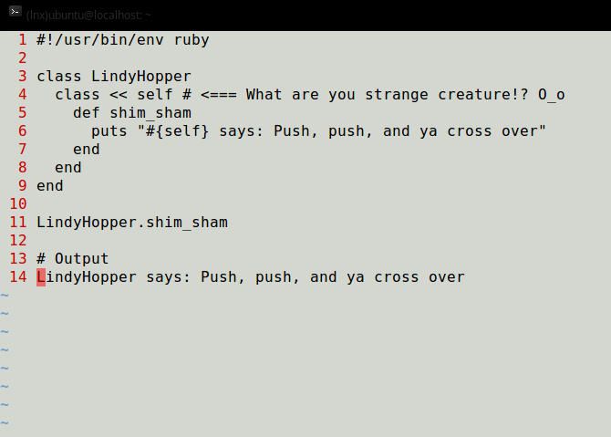
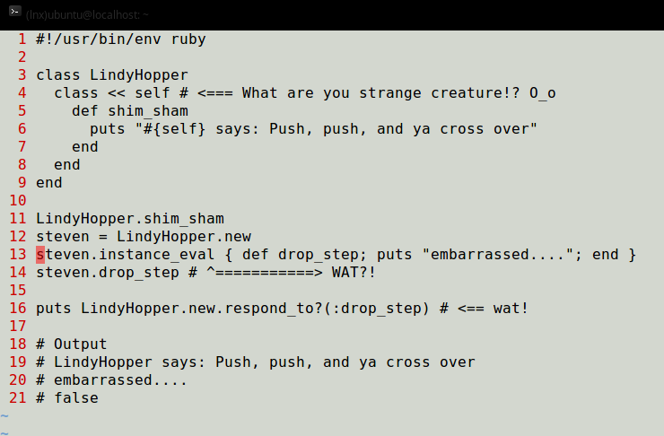
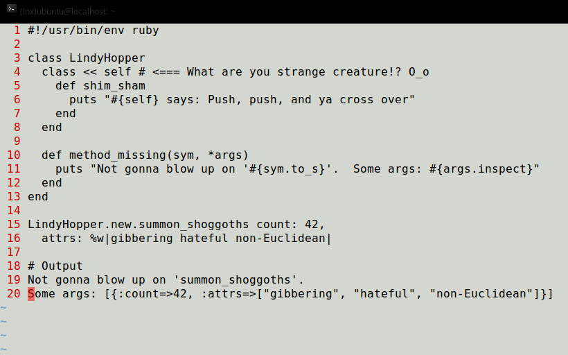
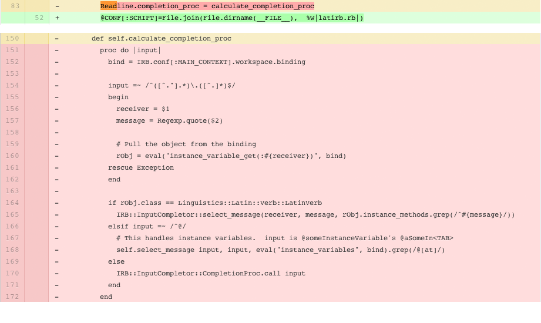
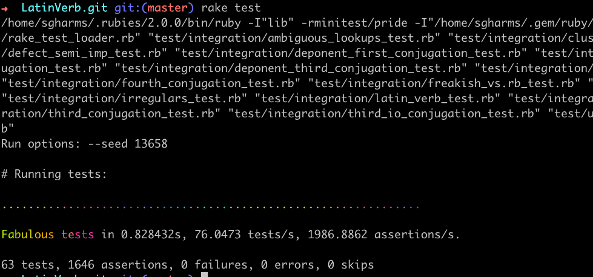
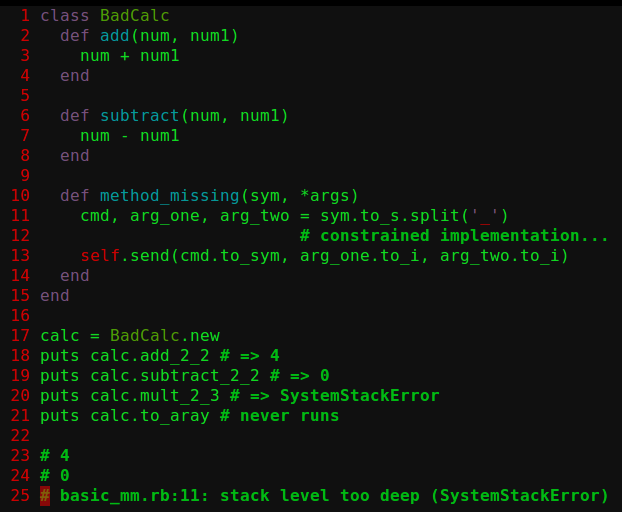
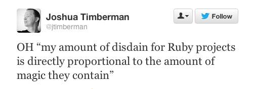

Preferring Object Orientation To Metaprogramming
About Me
{
"name": "Steven Harms",
"email": "rubyconfXIII@sgharms.oib.com",
"provenance": "San Francisco, CA",
"chirp": "@sgharms"
}
Preferring Object Orientation To Metaprogramming
I love Metaprogramming!
And then I saw....
And THEN I saw....
Time passed...
Three Questions
"When should I use metaprogramming?"
"When should I prefer something else?"
"If something else, what should it be?"
Obligatory "Define Metaprogramming" Slide
To talk about metaprogramming you must first spend too much time defining it
Writing code that:
- redirects passed messages at runtime
- provides or alters the structures that do said passing at runtime
At Runtime
- redirects passed messages at runtime
- provides or alters the structures that do said passing at runtime
How Will I Know (circa 2011)

"When should I use metaprogramming?"
- Never
- (Practically) Never
"When should I use something else?"
- Always
- (Practically) Always
Unclear Guidance (2013 edition)
Tim Connor
The first rule of ruby metaprogramming is that you don't talk about Ruby metaprogramming (because you'll lead people new to it to over use it). ;)
Tim Connor
The second rule is "don't do it", and that might be part of why all the materials on it don't give the OP a good next step, because the next step should be "don't". If you can possibly get away with it, then use something simpler and clearer. Unfortunately, you cannot simple be told not to MP, you must see it yourself. ;)
The Ultimate "No" to Metaprogramming
No to the term Metaprogramming per se
- Hard to define
- Greek envy
No to coding with Metaprogramming
- It has a bad conceptual framework
- The Ruby code itself doesn't want you to
- Normative social standards
Definition Recalled
Code that:
- redirects passed messages at runtime
- provides or alters the structures that do said passing at runtime
Definition Annotated
Code that:
- redirects passed messages at runtime
- provides or alters the structures that do said passing at runtime
Metaprogramming is...
Willfully writing code that does something:
- contrary to expectations communicated by the code's contextual conventions established at parse-time
- at runtime
Bug
Metaprogramming is therefore...
Writing bugs that have adventitious, beneficial side-effects
Adventitous (adj): coming from another source and not inherent or innate
A series of aberrations that just happen to produce the right output
Broken TAB-completion in IRB
Many, many tests
Horrible debug-ability
Listen to Twitter
The End of Quote-Metaprogramming
- Term is bad
- Style is bad
Yes, this is horrible, this idea
Part II: How to Replace Quote-Metaprogramming
Anti-Metaprogramming code
- deducible from parse-time state
- demonstrates reason and purpose in itself
Obvious
Obvious
- Greppable*
- Graspable
Anti-Pattern: Defining methods with define_method
Obviousness
- Lowest greppability
- Mid graspability, trending down
Alternatives
Use `def`
Anti-Pattern: Junk-drawer modules
Obviousness
- Highest greppability
- Middle graspability, trending down
Obviousness
- Highest greppability
- Middle-High graspability, trending down
Anti-Pattern: Anonymous modules
Obviousness
- Mid-low greppability, rapidly trending down
- Mid-low graspability, rapidly trending down
Anti-Pattern: Mixins to apply behavior / state to inclusor, hook method abuse
Obviousness
- Low greppability, abandon all hope
- Low graspability, abandon all hope
- Better pattern already exists!
- Use strategy pattern to to change behavior of the inclusor
Pattern: Use Strategies to apply behavior / state to inverted class
Obviousness
- High greppability, easy refactors
- High graspability, easy refactors
- Verging on good OO!
On the topic of good OO...
Anti-Pattern: Mind of God Constructs
Many quote-metaprogramming techniques go against OO
- Method Missing
- Open Class
- Kernel method
Theme of Rubyconf 2013
Maturing Ruby Ecosystem
- Jason Clark: Extending Gems - Patterns and Anti-Patterns of Making Your Gem Pluggable — Which mind of God wins?
- Emily Stolfo: API design for gem authors (and users)
- Method Missing
- Open Class
- Kernel method
- Greppable? Kinda, sometimes mayyyybe?
- Graspable? Not readily without comments
Prefer instead...
- Strategies
- Delegates
Anti-Pattern: Laziness Lookups
const_get, constantize
- Low greppability
- Low graspability
- Type it out
- What's wrong with a simple MAPPING hash?
Principal Techniques for Happier Programming
- Make lots of small, greppable classes
- Prefer composition and delegation
- Inject, inject, inject
- Love inversion
- Strategies for the unnamable or that which requires comment
Further Reference
- POODR: Start here
- Refactoring Ruby Edition
- Design Patterns in Ruby
Winding Up: Metaprogramming
- DON'T write more of it
- DO understand it
- Lotta legacy metaprogrammatic code out there needing refactoring
- Very helpful as a debugging technique with IRB, Pry, Byebug, Debugger
Thanks
- Shop It To Me Engineering: Past and Present: Rafael, Alex, Kenneth, Jeremy, Josh, Rich
- A-W Authors who made this path of transition possible: Sandi Metz, Russ Olsen, Jay Fields & Shane Harvie
- Lauren: Who always supports my dreams
- YOU! And our awesome
Ruby CommunityTeam of Garbage Collectors
Valediction: All Is Well
Rancho: That day I understood that this heart scares easily. You have to trick it, however big the problem is. Tell your heart, 'Pal, all is well. All is well.'
Raju: Does that solve the problem?
Rancho: No, but you gain courage to face it
"3 Idiots"